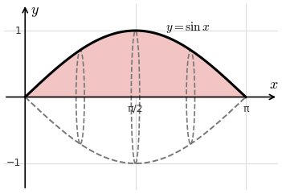

Lesson 4: The Disk Method (x-Axis)
Rotate the graph of \(y = f(x)\) over \([a, b]\) about the \(x\)-axis. Approximate the solid with thin disks, which are cylinders with volume \(\pi r^2 h\).
- Radius: \(f(x_k)\)
- Height: \(\Delta x\)
- Volume: \(\pi\left[f(x_k)\right]^2\Delta x\)

\[ V = \lim_{n \to \infty} \sum_{k=1}^{n} \pi\left[f(x_k)\right]^2\Delta x \]
The Disk Method (about the x-axis)
\[ V = \int_a^b \pi\left[f(x)\right]^2 dx \]
The curve \(f(x) = \sin x\) over \(0 \le x \le \pi\) is rotated about the \(x\)-axis. Find the volume of the solid.
Use \(\sin^2 x = \frac{1 - \cos(2x)}{2}\).
\[
\begin{aligned}
V &= \int_0^\pi \pi\sin^2 x\,dx \\
&= \frac{\pi}{2}\int_0^\pi \left(1 - \cos(2x)\right)dx \\
&= \frac{\pi}{2}\left[x - \frac{\sin(2x)}{2}\right]_0^\pi \\
&= \frac{\pi^2}{2}
\end{aligned}
\]